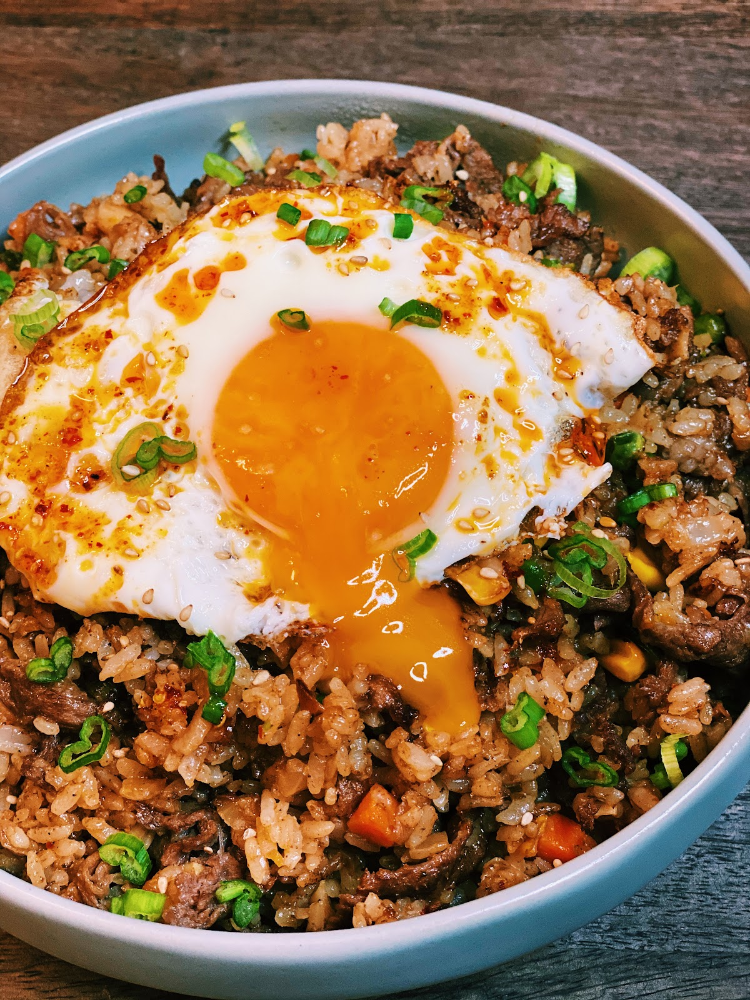

Fried Rice

Description
Easy and delicious 20 Minute Taiwanese Beef
Shacha Fried Rice perfect for any weeknight dinner!
Ingredients
- 1-1.5 lb of Thinly Sliced Beef
- 3 cups of Cooked Rice
- 11 cup of Corns, Peas, and Carrots
- 2 tbsp of Soy Sauce
Steps
- Turn the heat up to medium-high.
In a pan, drizzle in oil, and once the pan is hot,
add in chopped onions. Saute for 2-3 minutes or until translucent
- Add in minced garlic and thinly sliced beef and saute together for another 2-3minutes.